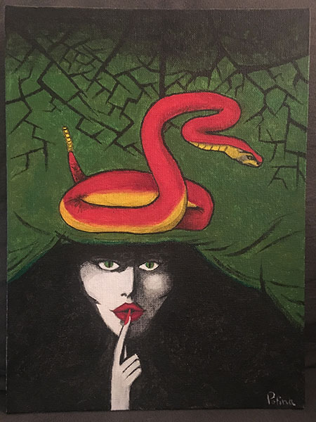
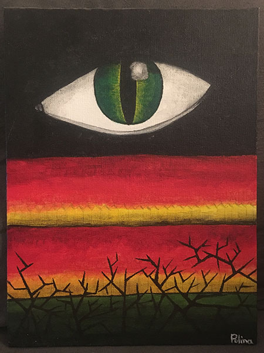
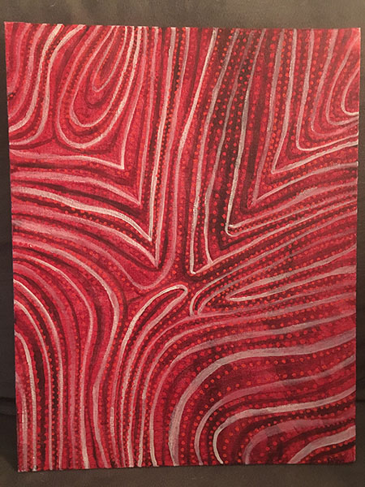
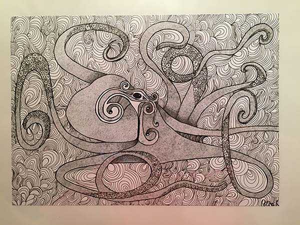

I don’t consider myself very good at drawing, but I really enjoy doing it and gazing on art works of others as well. It makes me very happy and lets me get very inspired. So here are few of my drawings:
“Silence”
“Horror”
“Under the skin”
“Underwater 1”
